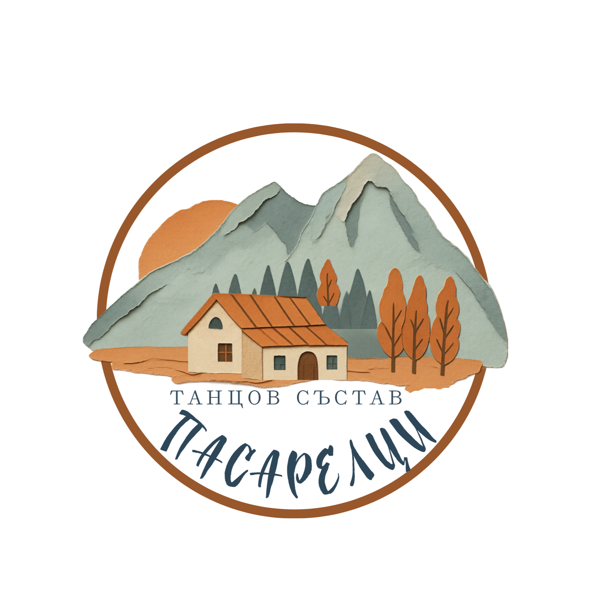

Танцов състав
Танцов състав "Пасарелци" е създаден на през 2008 година в с. Пасарел, Софийско. Художествен ръководител е Ангел Низамски. Основната идея на колектива е да се изучават български народни мегдански хора, да се възстановят стари, позабравени обичаи и да се съхрани запазеното фолклорно наследство на селището и областта.
Името на състава е вдъхновено от село Пасарел – място с живи фолклорни корени и богати обичаи, което символично свързва групата с традицията и българския дух. За пресдставяне на сцена специално, по автентичен образец, са изработени фолклорни носии, характерни за селото, а някои от "пасарелките" използват наследените и грижливо пазени автентични облекла. Репетициите се провеждат с невероятно настроение.
Първото представяне пред публика е на 3 март 2009 г. Този празник е запомнящ се и остава много специален в историята на групата и селото като едно ново начало. За първи път, след години прекъсване, се заиграват хора от танцьори в традиционните за Пасарел носии. И така се нижат годините до днес.

"Пасарелци" изучават както автентични хора, така и фолклорни обработени композиции, обхващащи всички фолклорни области на България. Освен тях, съставът се грижи да съхрани и предава местните обичаи и обреди, каквито са "Пиперенка" /Топене на пръстените/ и "В понеделник на чешмата". Вторият носи на групата първо място, златен медал и званието "Лауреат" от XIII Наионален събор на народното творчество в Копривщиа през август 2025 г.
📧 Email: contact@zadaniima.bg
📱 Телефон: +359 88 5276652
📍 Адрес: Народно читалище „Просвета – 1929"
ул. „Д. Списаревски" №10, с. Долни Пасарел
За повече информация свържете се с нас по телефона или email.